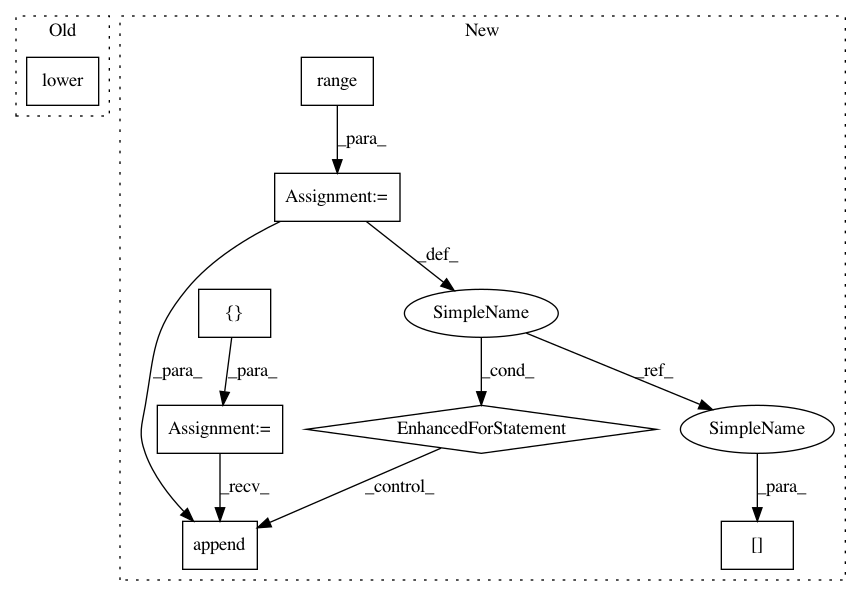

151f9e7d141372ce45fc4367b81385eeccc95093,sequenceLabelling/preprocess.py,,to_vector_simple_with_elmo,#Any#Any#Any#Any#Any#,256
Before Change
x = np.zeros((maxlen, embeddings.embed_size), )
if lowercase:
x_elmo = embeddings.get_sentence_wector_ELMo(lower(tokens))
else:
x_elmo = embeddings.get_sentence_wector_ELMo(tokens)
After Change
subtokens = []
for i in range(0, len(tokens)):
local_tokens = []
for j in range(0, min(len(tokens[i]), maxlen)):
if lowercase:
local_tokens.append(_lower(tokens[i][j]))
else:
local_tokens.append(tokens[i][j])
subtokens.append(local_tokens)
return embeddings.get_sentence_vector_with_ELMo(subtokens)
In pattern: SUPERPATTERN
Frequency: 3
Non-data size: 8
Instances
Project Name: kermitt2/delft
Commit Name: 151f9e7d141372ce45fc4367b81385eeccc95093
Time: 2018-06-20
Author: patrice.lopez@science-miner.com
File Name: sequenceLabelling/preprocess.py
Class Name:
Method Name: to_vector_simple_with_elmo
Project Name: kermitt2/delft
Commit Name: 151f9e7d141372ce45fc4367b81385eeccc95093
Time: 2018-06-20
Author: patrice.lopez@science-miner.com
File Name: sequenceLabelling/preprocess.py
Class Name:
Method Name: to_vector_simple_with_elmo
Project Name: ixaxaar/pytorch-dnc
Commit Name: bc714964ae754c25af66ded19ae2926768362584
Time: 2017-10-29
Author: root@ixaxaar.in
File Name: dnc/dnc.py
Class Name: DNC
Method Name: _layer_forward
Project Name: ixaxaar/pytorch-dnc
Commit Name: 4c335da8e73ecdac2d298c89a1652b587edd1086
Time: 2017-10-29
Author: root@ixaxaar.in
File Name: dnc/dnc.py
Class Name: DNC
Method Name: _layer_forward